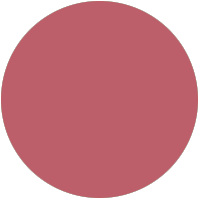
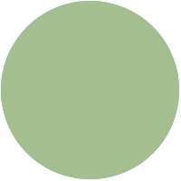

corps career
test I am a member of the Texas A&M Corps of Cadets, and Squadron 17. Along with reciving the distinguished student medal for academic acheivment, I have been selected to serve as the company guidon for the 2020 2021 school year. This is an incredible honor that identifies me as one of the top performing cadets of my class.

experience

During the summer of 2021 I interned at Bell Flight as a software engineer on the V-280 avionics team. More information regarding my time at Bell can be found on my linkedin page or in my resume.
This website was created from scratch using HTML5 and CSS, and will soon be updated with links to future projects.
contact me
Below you can find my email, social links, and a copy of my resume.